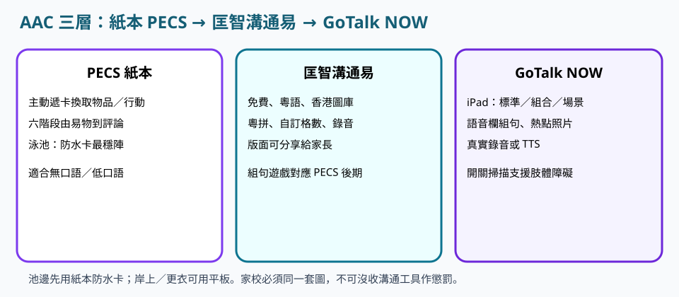
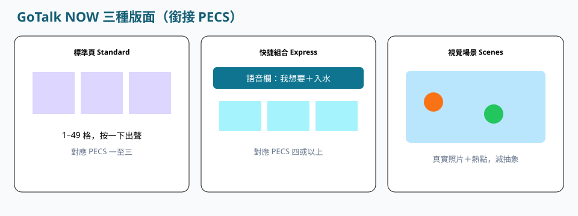

列印防水卡，遞卡必須兌現。
教學支援 · 2.8
提昇與特殊需要學員的溝通
請依序研讀導讀、重點與池邊準則，聽粵語說明，再以練習核對理解。
本網站根據課程講義、課堂分享與溝通工具筆記整理，供未能出席面授的學員系統研讀。不能代替醫療診斷、法律意見、課堂實習或面授扶抱示範。涉及健康、用藥、脊柱或癲癇等情況，須按家長／醫護文件執行。
單元導讀
溝通是全課程的核心能力。須能說明 PECS 所處階段、水中防水卡套裝，以及岸上如何與匡智溝通易或 GoTalk NOW 對齊。指令宜短，並請學員覆述。
研讀次序：重點 → 粵語說明 → 本單元練習 → 下一單元「正向行為管理及小組教學」。
學完應能掌握
- 教案策略欄須寫明 PECS 所處階段，不宜只寫「用圖」。
- 岸上須能比較匡智溝通易與 GoTalk NOW，判斷何者較適合該家庭。
- 水中須準備一套與家長共用的防水提示咭，並即時兌現學員遞卡。
重點

PECS 六階段
講義出處：2.8 提昇與特殊需要學員的溝通 · PECS 六階段
課堂情境
學員拍水發怒，其實未能表達「停」。
教學原則
一單張圖卡易物：拿起圖片交到溝通者手上換取物品。二增加距離與堅持：帶溝通本走更遠找夥伴。三分辨圖片：多張中選對目標卡。四組句：用「我想要」句頭加物品卡。五回答「你想要什麼」。六評論：回答看到／聽到／感受。好處是主動發起、減少因無法表達而起的情緒行為，部分學員其後才出口語。
池邊執行
先示範遞「我想要／停」卡並即時兌現，教案寫明階段。


匡智溝通易（香港）
講義出處：2.8 提昇與特殊需要學員的溝通 · 匡智溝通易（香港）
課堂情境
家校使用兩套不同圖示，學員因而混亂。
教學原則
匡智會跨專業團隊研發的免費 AAC，針對粵語及香港生活情境；3.0 有超過 1,500 幅本地圖卡（點心、港鐵等）、粵拼顯示與粵拼鍵盤、1×1 至 4×8 格、相機拍照與真實錄音、iPad 掃視／組句遊戲（對應 PECS 後期）、雲端檔案編號分享給家長。
池邊執行
岸上更衣用同一檔案編號版面，水中對應同一含義的防水卡。


GoTalk NOW
講義出處：2.8 提昇與特殊需要學員的溝通 · GoTalk NOW
課堂情境
學員已使用 iPad 溝通，教師卻只重複大聲口令。
教學原則
可視為 PECS 的數位升級；標準頁 1–49 格按一下出聲（銜接 PECS 一至三）；快捷組合頁有語音欄，可組「我想要＋去＋公園」（銜接第四階段以上）；視覺場景用真實照片加隱形熱點；支援真實錄音、中文 TTS、開關掃描；有 Lite 體驗版與完整版。
池邊執行
平板留在岸上乾區；已用 iPad 者岸上接 GoTalk，水中仍用紙本防水卡。
池邊應用
講義出處：2.8 提昇與特殊需要學員的溝通 · 池邊應用
課堂情境
有人把未防水平板遞入水中。
教學原則
水中先用紙本防水卡；最少套裝：停、再試、抹面、害怕、廁所、飲水、完成、幫忙、休息、入水、出水、吹泡、踢水、我想要；先示範遞卡，再要求學員主動交卡（PECS 一）。
語言發展參照
講義出處：2.8 提昇與特殊需要學員的溝通 · 語言發展參照
課堂情境
你用成人式長句，學員只懂「停」。
教學原則
2–3 歲明白程序指令與選擇；智障輕度約落後三分一、中度約一半、嚴重或停留 1–2 歲。
池邊執行
先選語言平台（能力＋家庭語言），再決定圖卡或口語。
課堂組織
講義出處：2.8 提昇與特殊需要學員的溝通 · 課堂組織
課堂情境
一堂講完所有規則。
教學原則
結構化、事先預告、一堂拆成短節。
池邊執行
聽障較前加閃爍提示；視障用凸字或聲音提示；智力障礙用簡化語句與示範。
池邊準則：做到／避免
做到
- 家校用同一套圖（匡智可分享檔案編號），指令先手勢／圖卡後口語或同時。
- 回應每一次主動溝通並即時兌現停、幫忙、飲水等請求。
- 教案策略欄具名 AAC 工具與 PECS 階段。
避免
- 只靠大聲重複口令。
- 沒收溝通工具作為懲罰。
- 一次出示過多新圖卡，或在水中強迫使用未防水的平板。
讀完先核對
三題判斷：下列做法是否符合本單元池邊準則。
詞彙
- AAC
- 擴大及替代溝通，包括圖卡、語音輸出裝置與溝通 App。
- 視覺場景
- 在真實照片上設熱點，點擊物件即播放訊息。
- 粵拼
- 香港粵語拼音，匡智溝通易用以支援低口語或非華語使用者。
- SLI
- 單純語言發展障礙。
- 事先張揚
- 預告流程，降未知焦慮。
粵語講稿（可邊聽邊看）
以下與本頁錄音同一份講稿。建議先讀重點，再聽說明，把判斷次序聽清楚。
各位同學，溝通一定先過泳式。學員發脾氣，好多時唔係因為任性，係因為佢唔識講「停」。所以你要識 PECS 嘅六個階段：由遞一張卡換嘢，到行遠搵人、揀卡、砌「我想要」、答「你想要咩」，再到評論佢見到、聽到、感受到嘅嘢。香港可以用免費嘅匡智溝通易，有粵語版同本地圖，支援粵拼，可以用雲端檔案編號分享，家校兩邊用同一個版面。如果學員已經用緊 iPad，就用 GoTalk NOW 嘅標準頁、組句欄，同埋真實場景嘅熱點。水中先用過膠嘅防水卡，最少要有停、害怕、幫忙、完成、我想要呢幾張；佢遞卡畀你，你就一定要兌現。教案要寫明用邊種工具、去到第幾階段；平板留喺岸上，千祈唔可以收走佢嘅溝通工具嚟罰人。